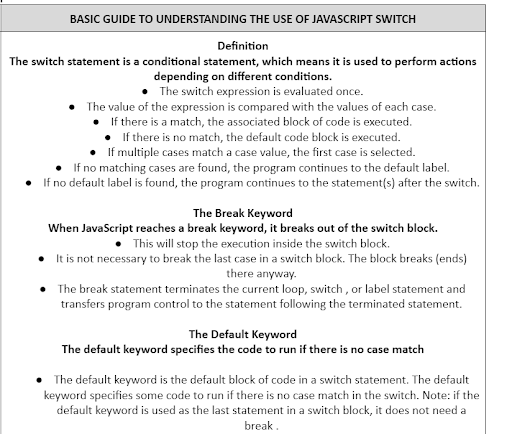

Why do people watch streams?
What are the needs of viewers and the characteristics of good stream
We all have different reasons why we do what we do. You have a reason why you want to excel your studies; why you are trying your best to stay healthy. Even in streaming content from different platforms, you have a reason why you watch your favorite videos from the dog channel you subscribe to. Most of the time, you know why you watch a certain stream.
Recognizing the characteristics of a good stream is important because it allows the streamer to create quality content for the intended viewers. What makes a good streamer is it just the content you create but also how you communicate and engage with your audience. First ,you need to have High quality stream, greater audience potential, analytics tracking, support, mobile streaming, video monetization, integration with external tools, privacy and security, streamlined broadcasting experience.
So, We research the need for the viewers for our topic.
Here's the need of our audience.
THE NEEDS
The audience needs to understand the psychological effect to the person playing games
The audience needs to learn what type of jenra produces positive and negative effects
The audience needs to know what video games genre that produce negative effects they should avoid and what games genre that produce positive effect they should play
The audience needs to learn the benefits of knowing the negative effects and positive effects of video games
What is a javascript switch?
